锻治真起（Maki Kaji）经营着一家日本杂志，专门研究数字谜题。锻治认为自己是一个用数字娱乐别人的人。“我觉得自己更像是一名电影或戏剧导演，而不是数学家。”他解释道。我在他东京的办公室见到了他。他既不是怪人，也不普通，并不符合人们对一个凭数字发家的成功商人的印象。锻治穿着一件流行的米色开襟羊毛衫，里面是一件黑色的T恤，戴着一副约翰·列侬样式的眼镜。57岁的他留着整齐的白色山羊胡和鬓角，经常开怀大笑。锻治很愿意告诉我他除了数字谜题以外的其他爱好。例如，他喜欢收集橡皮筋，在最近的一次伦敦之行中，他发现了一个对他来说相当不错的藏品——一包25克的WH史密斯（WH Smith）牌橡皮筋和一包100克的独立文具商品牌橡皮筋。他还会拍摄那些在算术上有着有趣特征的汽车牌照，作为自娱自乐。在日本，车牌由前后两个两位数组成。锻治总是带着一台小型相机，拍下他看到的前一个两位数的所有数字相乘结果等于后一个两位数的牌照（如图6-1所示）。
假设第二对数字不可能是00，那么锻治照下的每个牌照都是1到9的乘法表中的一行。例如，11 01可以被认为是1×1=1。同样，12 02是1×2=2。我们可以继续下去，共得出81种可能的组合。锻治已经收集了50多个。他打算集齐全套的乘法表后，在画廊中展出。
图6-1 锻治在东京一个停车场拍下的3×5=15
从数学诞生那天开始，人们就用数字来娱乐身心了。例如，古埃及的莱因德纸草书就包含了如下列表，它是第79个问题的答案的一部分。与纸草书中的其他问题不同，这个问题没有明显的实际应用价值。
房子 7
猫 49
老鼠 343
斯佩尔特小麦 2401 [1]
赫卡特（Hekat） [2] 16807
总计 19607
清单上列出了7栋房子的存货清单，每栋房子有7只猫，每只猫吃7只老鼠，每只老鼠吃7粒斯佩尔特小麦，每粒小麦都占了7个赫卡特。这些数字形成一个等比数列，等比数列中的每一项是通过将前一项乘以一个固定的数字计算出的，在这个数列中，固定的数字是7。猫的数量是房子的7倍，老鼠的数量是猫的7倍，斯佩尔特小麦的颗粒数量是老鼠的7倍，赫卡特的数量是斯佩尔特小麦的颗粒的7倍。我们可以把总数重写成7+72 +73 +74 +75 。
不过，发现这样一个数列极具吸引力的不止古埃及人。19世纪初，在《鹅妈妈童谣集》的一首童谣中，几乎出现了同样的句子：
当我去圣艾夫斯的时候，
我遇见一个男人，
他有七个妻子，
每个妻子有七个袋子，
每个袋子里有七只猫，
每只猫都有七只幼崽。
幼崽、猫、袋子、妻子，
要去圣艾夫斯的一共有多少？
这首诗是英国文学中最著名的陷阱问题，因为据推测，这名男子和他的妻子以及那些被带在身上的猫科动物，都来自圣艾夫斯，而不是去圣艾夫斯。然而，不管旅行方向如何，幼崽、猫、袋子和妻子的总个数是7+72 +73 +74 ，也就是2800。
另一个没那么有名的谜语出现在13世纪莱昂纳多·斐波那契的《计算之书》中。这一版本里有7名妇女在前往罗马的路上，她们带着的骡子、袋子、面包、刀和刀鞘的数目依次增多，刀鞘数目达到了76 ，使该数列的和达到了137256。
为什么在如此不同的时代和背景下，都出现了关于7的幂增长的趣题？它的魅力究竟是什么？每个例子都展示了等比数列的“涡轮加速”。童谣用一种诗意的方式，来表达小的数字能以多快的速度变成很大的数字。第一次听说时，你可能认为会有不少的幼崽、猫、袋子和妻子，但绝没想到会有将近3000个！纸草书和《计算之书》中描述的有趣问题也表达了同样的数学见解。虽然数字7看起来应该有一些特殊的性质，使它在这些问题上如此普遍，但实际上这和7一点儿关系也没有。把任何一个数与自身相乘几次后，它们的总和都很快会达到一个反直觉的极大的数字。
即使2与自身相乘，乘积的总和也会以令人眩晕的速度旋转升高。把一粒小麦放在棋盘的角上，在相邻的棋盘格里放两粒谷物，然后在相邻的每个格子里都把小麦颗粒数加倍，你需要多少小麦才能填满最后的棋盘格？也许是几卡车，或者一个集装箱？棋盘上一共有64个格子，所以最后一个数字是2与自身相乘63次，即263 。对谷物来说，这个数字大约是目前全世界小麦年产量的100倍。或者，换种方式考虑，如果你从130多亿年前大爆炸的那一刻开始，每秒数一粒小麦，那么到现在你还没数到263 的1/10。
数学谜语、儿歌和游戏现在统称为休闲数学。这是一个分布广泛而充满活力的领域，它的一个基本特征是，尽管其主题可能涉及极复杂的理论，但这些主题都是外行人也能够理解的。或者它们甚至可能根本不涉及理论，只是激发了人们去欣赏数字的神奇，比如收集车牌照片带来的兴奋。
休闲数学史上一个里程碑式的事件据说发生在前2000年的中国黄河沿岸。传说，禹看见一只乌龟从水中爬出来。它是一只神龟，腹部有黑白斑点。这些表示前9个数字的点在龟的腹部形成了一个网格，如果转换成阿拉伯数字，看起来就像图6-2中的A：
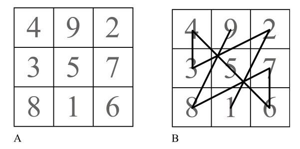
图6-2 神龟腹部的网格
这个正方形包含了1到9的数字，所有行、列和对角线上数字的总和都相等，这样的正方形被称为幻方。中国人把这样的正方形叫作洛书（图中每行、每列及对角线上的数字和都为15）。中国人认为洛书象征着宇宙的内在和谐，并用它来占卜和祭祀。例如，如果你从1开始，按顺序在正方形的数字之间连线，你就画出了图6-2B以及图6-3所示的图形，道士在道观中就是按此图示移动。这种被称为“禹步”的图案，也是中国美学哲学“风水”里的一些法则的基础。
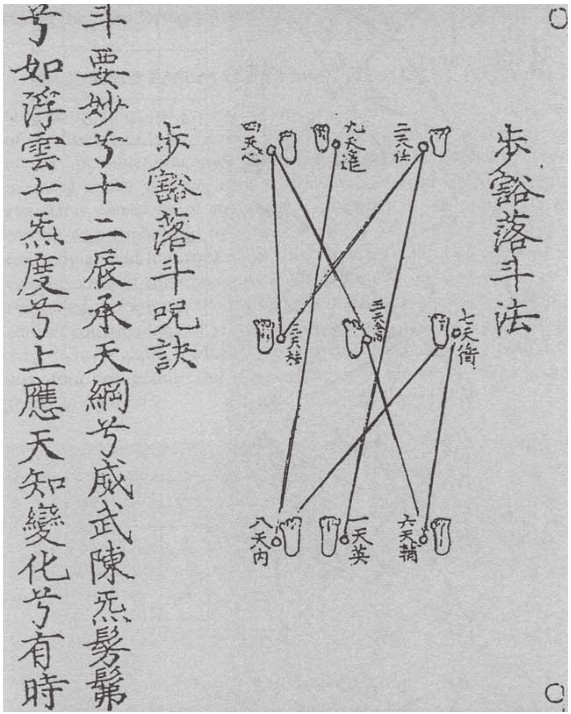
图6-3 道教中的禹步（木版印刷）
并不只有中国人看到了洛书神秘的一面。在印度教、伊斯兰教、犹太教和基督教的教徒眼中，幻方都有重要的宗教意义。伊斯兰文化发现了最具创造性的用途。在土耳其和印度，处女被要求在战士的衬衫上绣上幻方。人们相信，如果在分娩的妇女子宫上放一个幻方，分娩会更轻松。印度教教徒用带有幻方的护身符护身，文艺复兴时期的占星学家把幻方与太阳系的行星联系在一起。现代人对我们祖先的神秘倾向可能会嗤之以鼻，但这种对幻方的迷恋是可以理解的。幻方既简单又精巧复杂，就像一个数字咒语，也像一个带给你无限畅想的沉思对象，并深度体现了无序世界中的秩序。
幻方的乐趣之一是，它们不受3×3格的限制。一个著名的4×4幻方来自阿尔布雷希特·丢勒的作品。在《忧郁Ⅰ》中，丢勒画了一个4×4的幻方，这个最著名的幻方包含了他创作的年份：1514年。
事实上，丢勒的正方形胜过了一般的幻方。它不仅行、列和对角线的和都是34，在图6-4中这些正方形中，用点标记并连接起来的四个数字之和也都是34。
丢勒正方形的规律令人惊叹，你看得越多，发现的就越多。例如，第一行和第二行数字的平方相加是748。将第三行和第四行中的数字平方相加，或者将第一行和第三行中的数字平方相加，或者将第二行和第四行中的数字平方相加，或将两条对角线中的数字平方相加，都能得到相同的和。太神奇了！
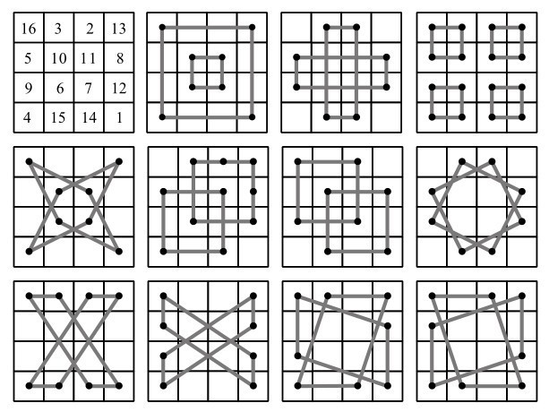
图6-4 丢勒正方形中的奇妙规律
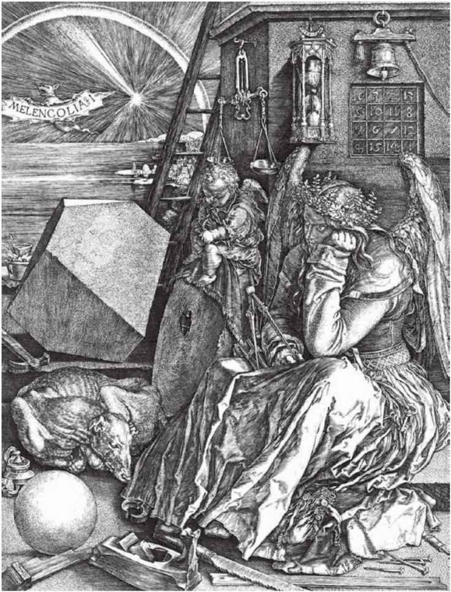
图6-5 《忧郁Ⅰ》：丢勒这幅著名的版画描绘了一位沉浸在思考中的天使，被与数学和科学相关的物体包围着，有罗盘、球体、天平、沙漏和幻方等。艺术史学家，尤其是具有神秘主义倾向的艺术史学家，长期以来一直在思考图像中间靠左的几何物体的象征意义，它被称为“丢勒多面体”。数学家则一直在思考如何制造这种多面体
如果将丢勒的幻方旋转180度，然后将11、12、15和16减去1，结果就会得到图6-6所示的正方形。
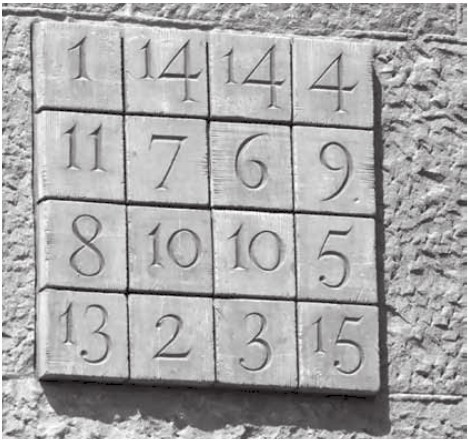
图6-6 圣家族大教堂侧面的数字正方形
这张图来自巴塞罗那圣家族大教堂的侧面，由安东尼·高迪设计。高迪的正方形不是幻方，因为有两个数字是重复的，但它仍然相当特别。每一列、行和对角线加起来都是33，也就是耶稣去世时的年龄。
我们可以花上数小时研究幻方，并惊叹于它的规律和和谐。事实上，没有哪个非实用的数学领域，能在这么长的一段时间里，引起业余数学家如此多的关注。在18世纪和19世纪，有关幻方的文献如雨后春笋般涌现。美国开国元勋之一本杰明·富兰克林也是著名的幻方发烧友，他年轻时作为宾夕法尼亚州议会的一名年轻书记员，在辩论中感到非常无聊，便开始自己构建幻方。他最著名的正方形是图6-7这个8×8的幻方变体，据说是他在孩童时期发明的。富兰克林在这个图形中加入了他对幻方理论的一个改进——“断对角线”，也就是如图6-8A和B中所示的黑色方格和灰色方格中的数字。虽然他的正方形不是一个真正的幻方，因为完整的对角线上的数加起来不等于260，但他新发明的断对角线的数字和仍是260。C、D和E图中所有黑色的方格和E图中的灰色方格的和，当然还有每一行及每一列的和，也都是260。
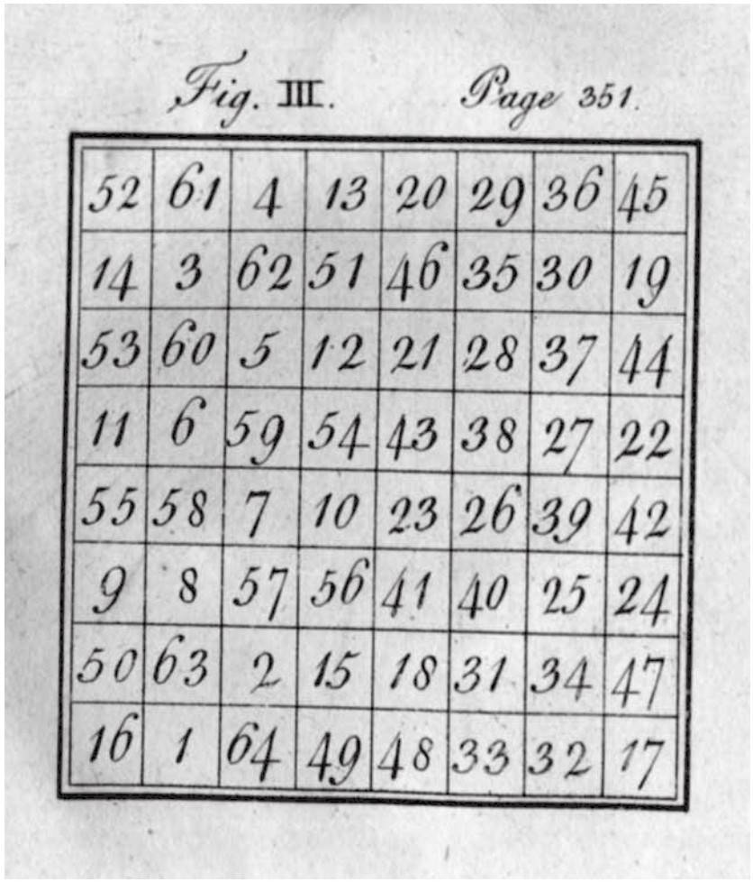
图6-7 在1769年发表的一封信中，本杰明·富兰克林这样评论一本关于幻方的书：“在我年轻的时候……我通过构建这种幻方来自娱自乐，终于学会了诀窍，我可以用一系列数字快速地填满任何正常大小的幻方，这些数字的排列方式是，每一行（水平、竖直或对角线）的和应当相等；但由于不满足于这些普通而容易的事情，我给自己设立了更困难的任务，并成功地构建出其他具有各种特征也更加有趣的幻方。”然后，他介绍了上面的正方形，出自他于1769年发表的《在美国费城进行的关于电的实验和观察》中。
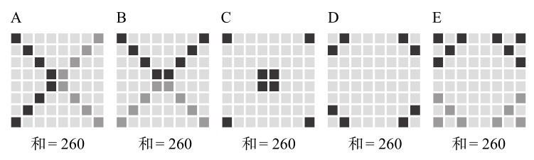
图6-8 富兰克林正方形中的规律
富兰克林的正方形还包含了更迷人的对称。每个2×2的子正方形中的数字之和都为130，与中心距离相等的任意4个数字之和也都等于130。据说富兰克林在40多岁时又发明了一个正方形。一个晚上，他创作了一个令人难以置信的16×16的正方形，这是“所有魔术师构建的所有幻方中最神奇的一个”（见附录，第486页）。
之所以一直有人沉迷于设计幻方，其中一个原因是幻方的数量多到惊人。让我们从最小的开始数：在1×1网格中只有一个幻方，也就是数字1。由4个数字组成的2×2网格中不存在幻方。排列数字1到9能得到的3×3幻方有8个，但这8个幻方其实是同一个幻方旋转或翻转后的结果，所以通常说只有一个真正的3×3幻方。图6-9显示了从洛书产生的每一种可能性。
令人惊讶的是，在3阶之后，可以产生的幻方数量以惊人的速度增长。即使去掉旋转和翻转造成的重复数量，4×4的网格中也可以生成880个幻方。5×5的网格可生成的幻方数量是275305224，这是1973年计算出的结果，这个结果只能通过计算机才能得出。虽然这个数字似乎是个天文数字，但实际上，它与在一个5×5的正方形中排列1到25的所有可能性的数目相比是很小的。这个排列的总数是25乘以24再乘以23，以此类推，直到1，这个数目大约是15后面跟着24个零。
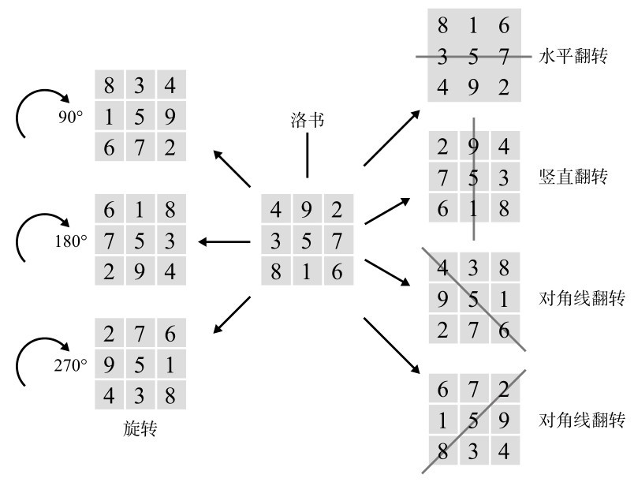
图6-9 洛书通过旋转和翻转可以产生7种幻方
6×6的幻方数目究竟有多少还不知道，但有人猜测它可能是1后面接19个零的数量级。这个数字如此之大，甚至超过了棋盘上的小麦粒总数（见第247页）。
幻方不仅是业余爱好者的领域。18世纪的瑞士数学家莱昂哈德·欧拉在他一生的最后时间里，对幻方产生了好奇。（考虑到此时他已几乎完全失明，这使得他对数字的空间应用的基本研究变得格外令人惊叹。）他关于幻方的工作还包括开发了一种修改版幻方，其中网格中的每个数字或符号在每行和每列中恰好出现一次。他称之为拉丁方。
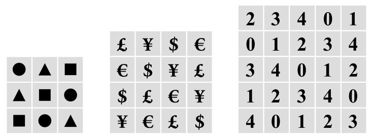
图6-10 拉丁方
与幻方不同，拉丁方有几个实际应用。它们可以用来在体育循环赛中计算出对手组合（循环赛指每队必须与其他所有队都比赛的赛制）。在农业中，它们也能形成一种方便的网格，比如，让农民能够在一片土地上测试几种不同的肥料，看哪种效果最好。假设农民有6种肥料要测试，他可以把土地分成6×6的正方形，按拉丁方的规律分配每种产品，确保土壤条件的变化会平等地影响每块土地。
本章开头介绍的日本益智题制作人锻治真起，开创了幻方风潮的新纪元。他在浏览一本美国益智杂志时想到了这个主意。他不懂英语，因此只能草草浏览着一页页他无法理解的文字游戏。突然，他被一个有趣的数字网格吸引，然后停了下来。这个叫“数字拼图”的谜题是一个未完成的9×9的拉丁方，使用了数字1到9。根据数字在每行和每列只允许出现一次的规则，解题者需要用一系列逻辑推导，找出如何填补缺失的空格。题目还给出了另一个条件：正方形被分成9个3×3的子正方形，每个正方形都用粗线标记。数字1到9只允许在每个子正方形中出现一次。锻治解出了这道数字拼图问题，他很兴奋，这正是他想在新杂志上刊登的一类谜题。
1979年首次亮相的数字拼图出自印第安纳州的退休建筑师和智力游戏爱好者霍华德·加恩斯（Howard Garns）。尽管锻治很喜欢解决加恩斯的难题，但他决定重新设计，让已知数字在整个网格上以对称的模式分布，和纵横填字游戏使用的格式相匹配。他称自己的版本叫数独（Sudoku），这个词在日语中的意思就是“数字只能出现一次”。
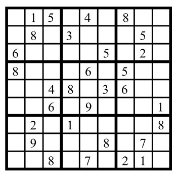
图6-11 数独
锻治在1980年推出了他的谜题杂志，数独从最早几期就刊登在上面，但锻治说它起初并没有引起人们的注意。直到这种谜题流传到国外后，它才像野火一样蔓延开来。
就像不会英语的日本人也能理解数字拼图一样，不会日语的英语母语者也能理解数独。1997年，一位名叫韦恩·古尔德（Wayne Gould）的新西兰人走进东京的一家书店。虽然他最初因为满眼的日语书而晕头转向，但他的眼睛最终落在了一些熟悉的东西上。有一本书的封面看起来像填字游戏的格子，里面还有数字。虽然这张图片显然属于某种智力游戏，但他并没有立刻理解规则。不过他还是买了这本书，认为自己以后会弄明白。在意大利南部度假时，他努力解出了其中的谜题。古尔德曾在香港当法官，当时刚退休，正在自学计算机编程，所以他决定尝试把数独编写成一个程序。一个优秀的程序员可能只需要几天时间就能完成这个任务，而古尔德花了6年。
但努力是值得的。2004年9月，他说服新罕布什尔州的《康韦每日太阳报》（Conway Daily Sun）刊印了他的一个谜题，立刻获得了成功。接下来的一个月，他决定与英国国家媒体接洽。古尔德认为，推销他的想法最有效的方法是展示一个“仿真模型”，模拟当天的报纸上已刊出数独游戏的样子。他从在香港的审判经验中了解到了伪造印刷品的知识，因而制造了一份逼真的《泰晤士报》第二版的仿品，并把它拿到了报纸的总部。在接待处等待几个小时后，古尔德给报社人员看了自己做的仿真报纸，他们似乎很喜欢。事实上，就在他离开后，《泰晤士报》的一位主管给古尔德发了一封电子邮件，要求他不要向任何人展示数独游戏。两周后，数独首次出现，三天后，《每日邮报》推出了它自己的版本。2005年1月，英国《每日电讯报》加入了，不久之后，英国每一家报纸都不得不推出每日数独来跟上竞争的步伐。同年，《独立报》报道了英国铅笔销量增长700%，并将其归因于这股数独热潮。到了夏天，书店、报刊亭和机场上到处都是摆放数独书籍的书架，不仅在英国，这股风潮也蔓延到了世界各地。2005年，在《今日美国》（USA Today）公布的畅销书排行榜前50名中，有6本是关于数独游戏的。到那年年底，这一谜题已经蔓延到30个国家，《时代》（Time）杂志将韦恩·古尔德与比尔·盖茨、奥普拉·温弗瑞和乔治·克鲁尼一起评为当年塑造世界的100位人物之一。2006年年底，数独已在60个国家出版。2007年年底，这个数字达到了90个国家。据锻治真起说，现在常玩数独的玩家数量已经超过1亿人。
解开任何谜题都会给人带来愉悦感，但除此之外，完成数独还另有一层魅力，即其完美的拉丁方所展示的内在美和平衡。数独的成功展现了一种对幻方的跨越文化的崇拜。与其他许多谜题不同的是，它的成功对数学来说也是一个巨大的胜利。这个谜题的内核其实是数学。尽管数独不包含算术，但它确实需要抽象思维、模式识别、逻辑推理和算法生成。这个谜题还鼓励了一种努力解题的积极态度，并培养了人们对数学之美的欣赏。
例如，一旦你理解了数独规则，你就清晰理解了唯一解的概念。对于题面中的每一种数字模式，都只有唯一一种可能的最终排列。然而，并不是每个未完整填写的网格都有唯一解。一个填写了部分数字的9×9的正方形可能没有解，或者可能有许多解。天空电视台在一档数独节目中，在英国农村的一个白垩山坡上画出了一个275×275英尺（约84×84米）的网格，声称这是世界上最大的数独。然而，对于给定的数字排列，共有1905种正确的填法。这个所谓的最大的数独并没有一个唯一解，因此它其实根本就不是数“独”。
涉及计算组合数量（例如算出天空电视台这个假数独的所有1905个解的组合）的数学领域，叫作组合数学。它研究事物的排列和组合，例如数字的网格，以及著名的旅行推销员的日程安排。比方说，我是一个出差的推销员，要拜访20家店。我应该按什么顺序去拜访他们，才能让总路程最短？这要求我考虑所有商店之间路径的所有排列，所以这是一个经典（且十分困难）的组合问题。类似的问题在商业和工业领域都会出现，例如在机场安排航班起飞时间或运作高效的邮政分拣系统。
组合数学是数学里最经常处理巨大数字的一个分支。我们在幻方中就看到，对一小组数进行重新排列的方式非常多。尽管拉丁方和幻方一样都形成了正方形的网格，但在网格大小相同的情况下，拉丁方的数量比幻方少。不过，拉丁方的数量仍然十分庞大。例如，9×9的拉丁方的数量是一个包含28位数字的数。
数独的数目能到多少呢？如果一个9×9的拉丁方能够被算作一个完成的数独网格，9个子方格必须包括每一个数字，那么9×9的数独方格总数就被减少到6670903752021072963960。然而，许多这些网格在翻转或旋转后是同一个正方形（如我在255页的3×3幻方图所示）。除去旋转和翻转后一样的正方形，数独的网格数量约为55亿个。
不过，这并不是数独的总数，因为每个完整的网格可以是许多数独的解，所以数独的数量要比这个数大得多。例如，报纸上的数独有一个唯一解。然而，一旦你填上了其中一个空格，你就用一组新的给定数字创建了一个新的网格，换句话说，就是有相同唯一解的一个新的数独，而且，你每填上一个空格，就多了一个新的数独。所以，如果一个数独有30个给定的数字，那么我们就可以用相同的唯一解创造另外50个数独，直到完成网格。（也就是说，每多出一个数字就有一个新的数独，直到81格中有80个给定数字。）找到数独的总数并没有那么有趣，因为我们会发现大多数数独的方格中只剩下很少的空格，这不符合解谜的精神。相反，数学家对你能在网格中留下多少数字更有兴致。数独的第一个组合学问题是，在方格中填上最少多少个数字，能让数独只有一种解？
在报纸上发表的数独通常包括约25个给定数字。到目前为止，还没有人发现给定数字少于17个且有唯一解的数独题面。事实上，给定17个数的数独激发了某种对组合数学的崇拜。西澳大利亚大学的戈登·罗伊尔（Gordon Royle）有一个包含17个数字的数独数据库，每天他会从世界各地的谜题制作者那里收到三四个新的包含17个数字的数独。到目前为止，他已经收集了近5万个。但尽管他是世界上“17个数字的数独”的专家，但他说，他也不知道自己离找到所有可能的谜题还有多远。“不久前我觉得我们已经接近尾声，但后来一位匿名投稿人又寄来了近5000个新数独。”他说，“我们从未真正弄清楚‘匿名17’是如何做到这一点的，但他显然用了一个聪明的算法。”
在罗伊尔看来，还没有人找到一个包含16条数字线索的数独，是因为，“要么我们不够聪明，要么我们的电脑不够强大”。“匿名17”之所以没有透露他的方法，可能是因为他使用了别人的大型计算机，而他本不应该把计算机用于这个用途。组合数学问题通常依赖计算机去处理困难的工作。罗伊尔说：“只有16个已填数字的谜题带来的可能性，对我们而言太大了，如果没有一些新的理论观点，我们甚至无法探索其中的一小部分。”但他有一种直觉，认为不会找到只包含16个数字的数独，他补充道：“我们现在有那么多17个数字的谜题，如果存在有16个数字的谜题，而我们竟然没有发现，那真的有些奇怪。”
锻治真起的名片上有“数独教父”的字样，而韦恩·古尔德自称是“数独继父”。我在西伦敦的一家快餐店里见到了古尔德。他穿着一件新西兰橄榄球上衣，带有一种典型的大洋洲人的随和风格。古尔德的门牙之间有一条缝，再加上厚厚的眼镜、一头短银发和年轻人一般的热情，让我联想起一位年轻的大学讲师，而不是退休的法官。数独改变了古尔德的生活。退休后的他比以前更忙了，他为81个国家的700多家报纸免费提供数独，靠出售他的程序和书赚钱，他说他的生意只占全球数独市场约2%的份额。尽管如此，数独还是为他赢得了7位数的财富。他是个名人。当我问他的妻子对他出人意料的成功有何看法时，他顿了一下。“我们去年离婚了。”他结巴地说，“我们结束了32年的婚姻，也许正是因为有了那么多钱。也许这给了她从未有过的自由。”在沉默中，我听到了这条令人心碎的信息：他或许掀起了一股全球性的热潮，但他同样为这次冒险付出了昂贵的个人代价。
我一直认为数独成功的原因之一是它富有异国情调的名字，尽管是美国人霍华德·加恩斯在印第安纳州提出了这个想法，但它的名字与东方智慧的浪漫产生了共鸣。事实上，谜题从东方传到西方有着历史悠久的传统。最早的国际拼图热潮始于19世纪初，当时从中国回来的欧洲和美洲的水手带来了几组几何图形，它们通常有7块，由木头或象牙制成——两个大三角形、两个小三角形、一个中等大小的三角形、一个平行四边形和一个正方形。把这些形状放在一起，可以拼成一个更大的正方形。这些图形组合还附带有一些小册子，上面有几十个几何形状、人像和其他物体的轮廓。你需要用这7块图形来构造出每个图形。
这个拼图起源于中国人在宴会上摆放不同形状的桌子的传统。一本来自12世纪的中国图书展示了76种宴会布置的方式，其中许多布置都是为了看起来像一些物体，比如一面飘扬的旗帜、山脉和鲜花。在19世纪初，一位绰号为“碧梧居士”的中国作家，将这种仪式性的编排改编成指尖大小的几何块，并收录在《七巧合璧图》这本书中。
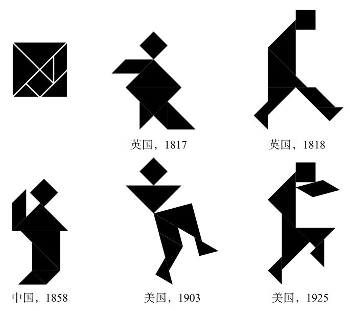
图6-12 各个年代的七巧板图
这组图形曾被叫作“唐图”（Chinese Puzzle），后来改名叫“七巧板”（tangram）。第一本在中国以外出版的有关七巧板的书来自1817年的伦敦。这本书立刻掀起了一阵风潮。在1817—1818年间，数十本七巧板的图书在法国、德国、意大利、荷兰和斯堪的纳维亚地区出版。当时的漫画家描绘了因忙于排列这些图形而不愿与妻子一起睡觉的男人、不去做饭的厨师和拒绝看病的医生，充分展现了这股热潮。这种狂热在法国更为明显，也许是因为其中一本书声称，这种拼图是拿破仑在被流放于南大西洋圣赫勒拿岛期间最喜欢的娱乐。从亚洲回来的船曾停在那里，使这位皇帝成为最早的玩家。
我喜欢七巧板。通过这些图形的排列，男人、女人和动物都神奇地复活了。只要稍微重新调整一块，人物的个性就完全变了。这些人棱角分明，且常常有怪异的轮廓，非常具有暗示性。法国人把这种拟人化发挥到了极致，甚至据此画出了图像。
不亲手试试，很难相信这种拼图有多吸引人。事实上，虽然看起来很容易，但解开七巧板的问题却格外困难。这些形状很有欺骗性，因为两个相似的轮廓可能有完全不同的组成结构。七巧板可以作为一个警告，提醒你不要自鸣得意，物体的本质可能并不总是你第一眼看到的那样。看看下面的七巧板图，看起来好像从第一个图形中去掉一个小三角，就变成了第二个图形，但事实上，这两个图形都使用了所有的拼块，而它们的排列方式完全不同。
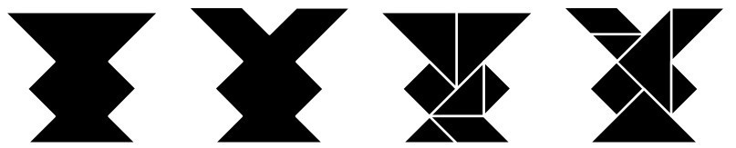
图6-13 形状相似，拼法完全不同的两个七巧板图
19世纪中叶，七巧板进入学校，不过它们也仍然是成年人的一种消遣。德国里希特公司将七巧板重新命名为Kopfzerbrecher，即“大脑终结者”，这个产品取得了成功，因此公司又推出了十几款类似的重排拼图，不同形状被分割成不同的碎片。在第一次世界大战期间，里希特拼图成了战壕中的士兵非常喜爱的消遣。由于士兵们对这些拼图的需求很大，公司又推出了18款拼图。其中一款叫作Schützengraben Geduldspiel（战壕耐心游戏），里面有齐柏林飞艇、左轮手枪和手榴弹等军事相关的形状。其中一些人物是由士兵设计的，他们从前线发来了这些想法。
在第一次世界大战之前，里希特公司的拼图在德国境外销售火爆。英国在战争期间禁止从德国进口货物，于是沃特福德的洛特积木有限公司趁机入局，自行生产复制品，直到20世纪40年代。
由于一代又一代人不断创造新的形象，七巧板在近200年来从未真正过时，你仍然可以在玩具店和书店买到这种拼图。已出版的拼图现在已经有5900多种。
图6-14 第二次世界大战中洛特积木的拼图广告
尽管七巧板与这类拼图有关联，但它并不是世界上第一种重新排列的拼图。在古希腊就出现了类似的拼图，被称为“斯托马基恩”（stomachion），它把一个正方形分成14块。（“Stomachi”的意思是“胃”，这个名字被认为来自拼图引起的肚子痛，但肚子痛不是因为吃下了这些拼图。）阿基米德写了一篇关于斯托马基恩的论文，但只有一小部分留存了下来。基于这个片段，有人认为这篇论文是在计算把斯托马基恩的部件拼成一个完美的正方形有多少种不同方法。直到最近，这一古老的问题才得以解决。2003年，计算机科学家比尔·卡特勒（Bill Cutler）发现有536种方法（不包括在旋转或翻转后相同的解）。
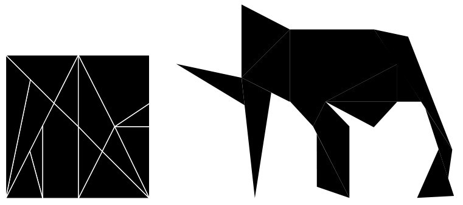
图6-15 斯托马基恩，也被称为“阿基米德的盒子”
自阿基米德时代以来，许多数学家都对休闲谜题有着浓厚的兴趣。“人最机灵的时刻就是发明游戏的时候。”戈特弗里德·莱布尼茨如是说。他对孔明棋（peg solitaire）的喜爱与对二进制数字的痴迷如出一辙：一个洞要么被占住，要么没有；它要么是1，要么是0。然而，最会玩的数学家要属莱昂哈德·欧拉了，他为了破解一个18世纪的脑筋急转弯，开创了一个全新的数学领域。
在柯尼斯堡（前普鲁士首都、现在的俄罗斯城市加里宁格勒），曾经有7座桥横跨普雷格尔河。当地人想知道，是否有可能不重复地走过全部7座桥。
为了证明这类路径是不可能的，欧拉画了一幅图，图中的每块陆地都用一个点（也称节点）表示，每座桥用一条线（也称连接）表示。他提出了一个定理，试图得出每个节点占有的连接数是多少时有可能生成一个通路（指不重复地走遍每条连接）。而在七桥问题中，是不可能生成通路的。
欧拉实现了概念上的飞跃，他认识到解决这个问题的关键不是关于桥梁的确切位置的信息，而是它们是如何连接的。伦敦地铁地图借用了这个想法：它在地理上并不精确，但准确地展现了地铁线路是如何连接在一起的。欧拉的定理开创了图论这一领域，预示着拓扑学的发展。拓扑学是一门内容丰富的数学领域，它研究物体在被压缩、扭曲或拉伸时不发生变化的性质。
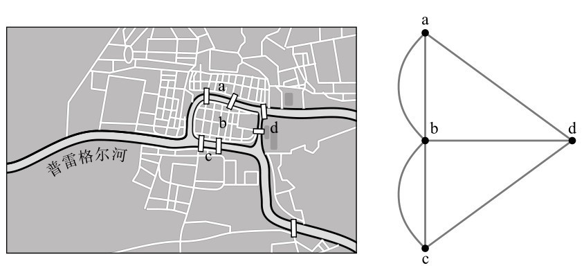
图6-16 18世纪的柯尼斯堡：左图为地图，右图为图示
与第二次国际性的解谜热潮所产生的兴奋相比，1817年人们对七巧板的迷恋已经算不上什么了。从1879年12月波士顿的一家玩具店推出“十五数字推盘游戏”（Fifteen puzzle）起，制造商就赶不上大众的需求了。“无论是长了皱纹的老人，还是无邪的孩童，无不被这种风潮感染。”《波士顿邮报》这样评价道。
十五数字推盘游戏包含15个正方形木块，它们被放在一个正方形盒子里，留出一个空格，组成了一个4×4的正方形。这些木块被从1到15编号，随机放进盒子里。利用空出的空间，方块可以在整个4×4的正方形中滑动，玩家的目标是最终使它们按数字顺序排列。十五数字推盘游戏非常有趣，让人上瘾，这股风潮很快从马萨诸塞州蔓延到纽约，然后传播到整个美国。“它像西罗科风 [3] 一般激烈，从东到西席卷了国家，所到之处人们的大脑无不沦陷，甚至精神错乱。”《芝加哥论坛报》评论道。据《纽约时报》报道，从未有哪种风潮“以（如此）惊人的速度在这个国家或其他任何国家蔓延”。
这个游戏很快开始销往海外，据说，伦敦的一家商店不卖其他东西了，只卖这个游戏。不到6个月的时间，它就传到了世界的另一边。“不少人已经被逼疯了。”新西兰《奥塔戈见证报》（Otago Witness）在1880年5月1日的一封信中说。
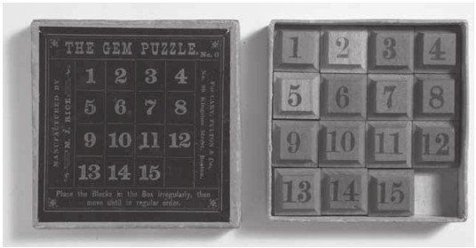
图6-17 十五数字推盘游戏原本叫“宝石迷宫”
十五数字推盘游戏是纽约州北部的一位邮政局局长诺伊斯·查普曼（Noyes Chapman）创造的，他在20年前就曾试图制作一个4×4的幻方的实体模型。他制作了刻有16个数字的小木方块，并将它们紧密地排列在一个正方形的盒子里。当他意识到，去掉一块会给相邻木块提供可滑动的空间时，他发现尝试重新排列数字会变成一个十分有趣的游戏。查普曼为家人和朋友制作了几个版本，但从来没有利用他的发明挣钱。直到波士顿一位精明的木匠决定将拼图商业化后，这种拼图才开始流行起来。
十五数字推盘游戏对试图破解它的人来说尤其折磨人，因为它有时可以被解开，有时则不能。一旦这些方块被随机放入，似乎只有两种结果：要么可以按数字顺序重新排列，要么前三行可以按顺序排列，但最后一行只能变成“13-15-14”。这股热潮之所以流行，在一定程度上是因为，人们想弄清楚是否有可能从13-15-14变到13-14-15。1890年1月，在首批拼图上市几周后，纽约罗切斯特的一位牙医在当地报纸上登了一则广告，称向任何能证明做得到或做不到的人提供100美元奖金和一副假牙的奖励。他认为这是不可能的，但他在数学上需要一些帮助。
在十五数字推盘游戏上受到的挫折，从世界各地的客厅蔓延到学术殿堂。而在专业人士介入之后，谜题就从令人抓狂的无法解决，变成了令人满意的无解。1890年4月，当时杰出的数学家赫尔曼·舒伯特（Hermann Schubert）首先在德国一家报纸上证明了“13-15-14是无解的位置”。此后不久，刚创办没多久的《美国数学杂志》也发表了一份证明，证实十五数字推盘游戏中有一半的起始位置将产生13-14-15的最终解，而另一半将最终得到13-15-14。十五数字推盘游戏至今仍然是唯一一个并不总是有解却引发了国际潮流的拼图，怪不得它要把人逼疯了。
就像七巧板一样，十五数字推盘游戏并没有完全消失。它是滑块拼图的前身，而这种拼图目前在玩具店、圣诞拉炮彩包和企业营销礼包中仍然能找到。1974年，一个匈牙利人在思考改进拼图的方法时，突然想到可以在三维空间中重新设计它。这个名叫艾尔诺·鲁比克（Ernö Rubik）的人设计出了后来史上最成功的智力玩具——魔方。
在2002年出版的《谜题本能》（The Puzzle Instinct）一书中，符号学家马塞尔·达内西（Marcel Danesi）说，解决谜题的直觉能力是人类的本能。他解释说，当我们面对一道谜题时，我们的本能会驱使我们寻找解决方案，直到我们满意为止。从希腊神话中出谜语的斯芬克斯，到各种侦探悬疑故事，谜题是跨越时代和文化的共同特征。达内西认为，谜题是存在主义疗法的一种形式，它向我们展示了具有挑战性的问题可以有精确的解。英国最伟大的出题人亨利·厄内斯特·杜德尼认为解谜是人类的基本天性。“事实上，我们生活中的大部分时间都花在了解谜上，令人费解的问题不就是谜题吗？从童年时代开始，我们就一直不断在提出或者试图回答这些问题。”
谜题以一种非常简洁的方式，表达了数学中令人惊叹的元素。解开它们通常需要横向思考，或者依赖反直觉的事实。从解谜中获得的成就感是一种会上瘾的快乐，而解谜失败的挫败感几乎令人无法忍受。出版商很快意识到，趣味数学题有市场。1612年，克劳德·加斯帕尔·巴谢（Claude Gaspard Bachet）在法国出版了《与数字有关的有趣好玩的问题（对所有会算术且充满好奇的人都非常有用）》，书中包含了幻方、纸牌游戏、非十进制问题和“想一个数字”的游戏等。巴谢是一位严谨的学者，他翻译了丢番图的《算术》，但他的这本数学科普书比他的学术著作更有影响力。后来所有谜题书的出现都离不开它，几个世纪以来，这本书从未过时，它最近一次再版是在1959年。数学，甚至是休闲数学都有一个显著的特点，那就是它不会过时。
19世纪中叶，美国报纸开始刊登国际象棋问题。这些问题最早的出题人之一是萨姆·劳埃德（Sam Loyd），他也是早期最成熟的谜题设计者之一。劳埃德来自纽约，在他14岁的时候，他出的第一道谜题就被刊登在了当地报纸上。17岁时，他已经成为美国最成功、最著名的国际象棋问题的出题人。
他设计的问题从国际象棋发展到了数学谜题。19世纪末，他成了世界上第一位专业的出题人和经理人。他在美国媒体上发表了多篇文章，曾一度声称他的专栏每天会收到10万封来信。不过，我们应该对这个数字有所保留。劳埃德形成了一种对事实闹着玩儿的态度，这也是一位专业的出谜人的典型特点。首先，他声称自己发明了十五数字推盘游戏，一个多世纪以来，人们都认为这是真的，直到2006年，历史学家杰里·斯洛克姆（Jerry Slocum）和迪克·索内维尔德（Dic Sonneveld）发现了诺伊斯·查普曼。劳埃德用《七巧板的第8本书，第一部分》重燃了人们对七巧板的兴趣，它号称是一本关于谜题的4000年历史的书。但这本书就是一个闹剧，尽管它最初还得到了学术界的认真对待。
如果说，劳埃德那种资本家的胆识和自我标榜的天赋反映出了世纪之交纽约的犀利明快，那么杜德尼则体现了英国更为保守的生活方式。
杜德尼来自萨塞克斯郡的一户牧羊人家庭，他从13岁起开始在伦敦的政务部门做职员。后来他厌倦了这份工作，开始向各种出版物投稿短篇故事和谜题。最终，他全职投身新闻业。他的妻子爱丽丝写了一本关于萨塞克斯农村生活的畅销浪漫小说，她获得的版税收入使他们夫妻过上了奢侈的生活。杜德尼一家在乡村和伦敦两边生活，和亚瑟·柯南·道尔爵士一道成为高雅文学界的一分子。道尔爵士创作了夏洛克·福尔摩斯这个人物，而福尔摩斯或许是所有文学作品中最具代表性的解谜者了。
据说，杜德尼和萨姆·劳埃德的首次接触是在1894年。当时，劳埃德提出了一个国际象棋问题，他坚信没有人能发现他的解法，这个解法包含53步。但比劳埃德小17岁的杜德尼用50步就解出了问题。两人随后开始合作，但当杜德尼发现劳埃德抄袭他的作品时，他们就闹翻了。杜德尼非常鄙视劳埃德，并把他和魔鬼画上了等号。
虽然劳埃德和杜德尼都是自学成才，但杜德尼更有数学天赋。他的许多谜题触及了深层的问题，而且常常是在学术界注意到这些问题之前。1962年，数学家管梅谷研究了一个问题，说的是邮递员应该在街道网格上选择哪条路线，才能既走遍每条街道，又路程最短。而在大约50年之前，杜德尼在一道关于煤矿监察员穿过地下竖井的谜题中，就设计出了同样的问题，并求出了解。
杜德尼同样对数论做出了意想不到的贡献。他提出了开方（Root Extraction）这类谜题。下列数的立方根等于它们各个数位上的数字之和：
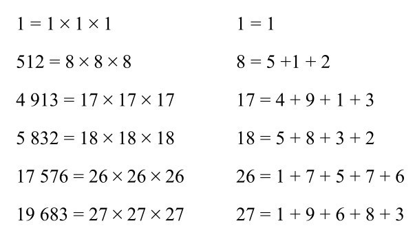
这种数现在被称为杜德尼数，符合这个特点的数只有6个。杜德尼的另一个特长是几何分割，也就是把一种形状切割成小块，再重新组合成另一种形状，就像七巧板背后的原理一样。杜德尼找到了一种方法，把一个正方形切成6块，然后拼成一个五边形。他的方法成了一种流行的经典方法，因为此前多年来人们一直认为，将一个正方形变成一个五边形，最少需要切割成7块。
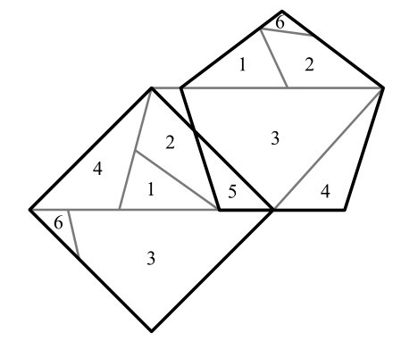
图6-18 将一个正方形变成一个五边形
杜德尼还发现了一种新方法，可以把一个三角形切成4块，拼成一个正方形。他发现，如果把他的解法中切成的4块图形接在一起，可以形成一条链，这样一来，它们往一侧折叠可以得到三角形，而往另一侧折叠则会变成正方形，他称之为男装店主谜题，因为这些图形的形状看起来像男装店里剩下的布料。这道谜题引入了“铰接分割”的概念，杜德尼用红木和黄铜铰链做了一个模型，并在1905年伦敦皇家学会的会议上展示了它，引起了人们的极大兴趣。男装店主谜题是杜德尼最主要的贡献，一个多世纪以来，它一直吸引着数学家，为他们带来了乐趣。
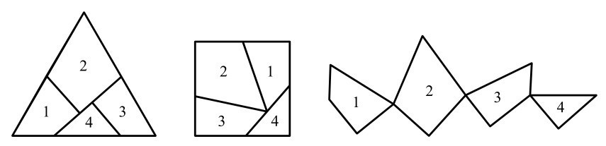
图6-19 男装店主的谜题
加拿大少年埃里克·德迈纳对男装店主的谜题十分着迷。德迈纳是位神童，20岁时就成了麻省理工学院的助理教授，他对这个问题的普遍性十分感兴趣。他想知道，有没有可能对任一直边形状进行分割，串成一条链，都可以折叠成一个面积相等的不同多边形。德迈纳花了10年时间研究这个问题，2008年3月，在他27岁时，他在亚特兰大一家酒店的宴会厅上向一群谜题爱好者公布了他的解法。
德迈纳又高又瘦，留着蓬松的胡子，扎着卷卷的深棕色马尾。他身后的大屏幕上投影出了一张男装店主谜题的图片。他说，他最近决定和他的博士生一起攻关这个问题。“我不相信这个命题是真的。”他说。然而，与他的预期相反的是，他和学生发现，通过类似于男装店主谜题这样的铰接分割，确实可以将任何多边形转换为面积相等的其他多边形。宴会厅里响起掌声，这在计算几何学会议中很少见。但在谜题的领域里，这是一个令人兴奋的突破，一个标志性的问题被一代人中最聪明的大脑解决了。
这场在亚特兰大举行的会议被称为加德纳聚会，在场的观众是最能欣赏德迈纳的演讲的那群人。对数学家、魔术师和谜题爱好者来说，加德纳聚会是世界上最重要的大型聚会。这场聚会两年举办一次，是为了致敬一位在20世纪后半叶革新休闲数学的人。马丁·加德纳（Martin Gardner）今年93岁 [4] ，在1957年至1981年间，他在《科学美国人》杂志上每月撰写一期数学专栏。这一时期见证了许多伟大的科学进步，比如太空旅行、信息技术和遗传学，然而，真正满足读者想象力的是加德纳生动且易懂的文章。他的专栏覆盖了各个主题，从棋盘游戏到魔术，从数字命理学到早期电脑游戏，还会涉足语言学和设计等看似不相关的领域。“我认为（加德纳）对数学有一种幽默的尊重，这种态度在如今的数学界经常被遗忘。”德迈纳在演讲结束后对我说，“人们往往过于严肃了。我的目标是让我做的每件事都变得有趣。”
德迈纳的父亲是一位玻璃匠和雕塑家，德迈纳小时候通过父亲知道了加德纳的专栏。德迈纳父子经常一起发表数学论文，这也体现了加德纳的跨学科的精神。德迈纳是计算折纸的先锋，这是一个数学和艺术交汇的领域，他的一些折纸模型甚至在纽约现代艺术博物馆展出。德迈纳认为，数学和艺术是相似的活动，它们都体现了一种“关于简洁和美的美学”。
在亚特兰大，德迈纳没有向观众解释他证明男装店主谜题的细节，但他明确表示，分割一个多边形，让它重新排列并铰接在一起，形成另一个多边形的过程并不一定是美的，而且通常在实际中可能是完全不可行的。德迈纳试图应用他在铰接分割上的理论成果，设计出一种可以变形的机器人，就像漫画书和系列电影《变形金刚》中的英雄那样，机器人可以变形成不同类型的机器。
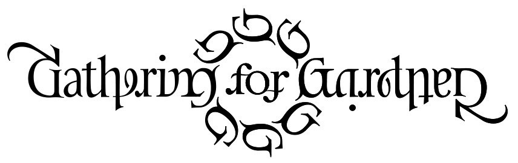
图6-20 第8届加德纳聚会的标志
第8届加德纳聚会（G4G）的标志由斯科特·金（Scott Kim）设计，被称为双向图或对称字。
把它上下倒转过来，完全不影响阅读。金原本是一位计算机科学家，后来成为一名谜题设计师，在20世纪70年代，他发明了这种对称的书法风格。双向图不一定指旋转180度后完全相同的图形，呈对称的图形或另含深义的书法作品都叫作双向图。
作家艾萨克·阿西莫夫将金和荷兰艺术家埃舍尔相提并论，他称金为“字母艺术中的埃舍尔”。埃舍尔用透视和对称来创造自相矛盾的图形，他最著名的作品是一组看似起起落落的楼梯，互相连接，最后又回到起点。埃舍尔和金的另一个相似之处在于，他们的作品都在马丁·加德纳的介绍下，受到了大众的欢迎。
印刷工、艺术家约翰·兰登（John Langdon）也自行构想出了双向图。数学家特别喜欢这种字体，因为它以一种诙谐的方式表现了他们对模式和对称性的追寻。作家丹·布朗通过他的父亲理查德·布朗（Richard Brown）认识了双向图，他父亲是一位数学老师。丹·布朗委托兰登为他的畅销书《天使与魔鬼》设计了“天使与魔鬼”一词的双向图，为了表达感谢，丹·布朗将故事的主角命名为罗伯特·兰登（Robert Langdon）。在《达·芬奇密码》和《失落的秘符》中，兰登也以英雄的形象再次登场。双向图也找到了一个新的位置，它成为一种身体艺术。以形成对称为主要目的的准哥特式花式字体，再加上名字从前往后和从后往前读、颠倒或以正常顺序读出来都完全一样的神秘能量，这完全符合文身的美学标准。
G4G会让你相信数学可以预防痴呆症发作。聚会上的很多听众都超过70岁了，有些已经80多岁，甚至90多岁了。半个多世纪以来，加德纳与成千上万的读者通信，包括许多著名的数学家，他也和其中一些人成了亲密的朋友。时年88岁的雷蒙德·斯穆里安是世界上最杰出的逻辑悖论专家。他的开场白是：“在我开始演讲之前，我想说一件事。”斯穆里安身材苗条，衣着不讲究，但魅力十足，一头飘逸的白发，胡须蓬乱。他经常弹奏酒店的钢琴给客人助兴，也会对毫无戒心的路人表演魔术，一天晚餐时，他还表演了一出单口喜剧。
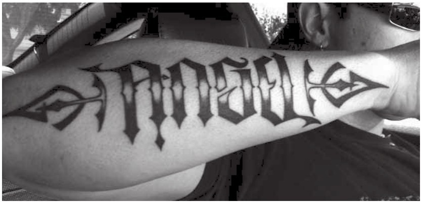
图6-21 马克·帕尔默设计的这个文身，上下颠倒后，“天使”就变成了“魔鬼”
时年76岁的所罗门·戈隆布（Solomon Golomb） [5] 虽然没有斯穆里安那么活跃，但也能聊一些悖论之外的事情。戈隆布说话温和、慈祥，他在空间通信、数学和电气工程方面都做出了重大贡献。在马丁·加德纳的帮助下，戈隆布也为全球流行文化做出了贡献。在学术生涯的早期，戈隆布提出了多格骨牌的概念，多格骨牌由两个以上的方块组成。三格骨牌由3个方块组成，四格骨牌由4个方块组成，以此类推。在加德纳专栏早期的一篇文章里，他介绍了如何将多格骨牌结合在一起，文章在全球范围内引起了人们的极大兴趣，戈隆布的著作《多格骨牌》（Polyominoes）还被翻译成了俄语，成为一本畅销书。一位爱好者制作了一个游戏，游戏中会有四格骨牌落下。那个游戏后来被称为俄罗斯方块，它成了世界上流行时间最长、最受欢迎的电脑游戏之一。当然，戈隆布本人玩俄罗斯方块的时间不会超过半小时。
另一位与会者是伊万·莫斯科维奇（Ivan Moscovich），他几乎和老年的文森特·普莱斯 [6] 一模一样。他穿着一身无可挑剔的深色西装，眼睛炯炯有神，留着两撇小胡子，满头银发向后梳得整整齐齐。对莫斯科维奇来说，谜题的魅力在于解开它们需要创造性的思维。他的出生地在现今的塞尔维亚，在第二次世界大战期间，他曾被关押在奥斯威辛集中营和贝尔根-贝尔森集中营。他认为自己之所以能活下来，是因为他天生就具有创造力，他不断创造环境，最终拯救了自己。战后，他成了一位狂热的谜题发明家。他喜欢不断地跳出思维定式去思考，绕开一些不可避免的事情。他说，自己侥幸逃脱集中营后，就有了不断提出新想法的动力。
在过去的半个世纪里，莫斯科维奇已经授权并制作了大约150道谜题，他还编撰了一本谜题书，被誉为自劳埃德和杜德尼以来最伟大的谜题集。时年82岁 [7] 的莫斯科维奇有了他的最新发明——一个叫作“你和爱因斯坦”的滑块游戏。这个游戏是在一个正方形的网格中滑动滑块，拼出爱因斯坦的图片。它的巧妙之处在于，每个滑块中都有一面倾斜的镜子，能将图像反射到同侧，也就是说，你所看到的方块实际上是相邻方块上图像的反射。莫斯科维奇告诉我，他很高兴“你和爱因斯坦”能在全球取得成功。
和行业里的每个人一样，莫斯科维奇的梦想也是引领新的智力玩具热潮。迄今为止只出现了4次与数学有关的国际智力玩具热潮，即七巧板、十五数字推盘游戏、魔方和数独。到目前为止，魔方是利润最高的。自从1974年艾尔诺·鲁比克提出这个想法以来，全球已经有3亿多个魔方被卖出。除了在商业上大获成功以外，色彩艳丽的立方体也成了流行文化中的常青树。它是智力玩具中无可匹敌的存在。不出所料，在2008年的G4G上，魔方出现了，一场关于四维魔方的演讲赢得了热烈的掌声。
最初的魔方由26个小立方体组成，排成3×3×3的阵列。每个水平和竖直的“切片”都可以独立旋转。立方体的图案被打乱后，就要转动切片，使大立方体的每一面上只有一种颜色的小正方形。立方体一共包含6种颜色，每面一种。莫斯科维奇告诉我，艾尔诺·鲁比克的设计在两种意义上都很出色。不仅采用立方体的想法很天才，他把这些方块拼在一起的方法也非常聪明。如果你拆卸一个魔方，你就会发现它并不由单独的机械装置固定，每个小立方体都是一个中心球体的一部分，这个球体把它们紧密连接在一起。
立方体本身就富有魅力。它是一种柏拉图多面体，这种形状至少从古希腊时代起就具有标志性的神秘地位。它的英文名（cube）也很好，易于记住，有一种美妙的音韵和谐。魔方的名字（Rubik’s Cube）也带着一种东方的异域情调，但不是来自亚洲，而是来自冷战时期的东欧。它听起来很像苏联早期的航天技术成果“斯普特尼克”号人造卫星。
魔方成功的另一个因素是，虽然解开魔方并不容易，但这一挑战并没有难到让人望而却步。来自汉普郡的建筑商格雷厄姆·帕克（Graham Parker）在坚持了26年后，终于实现了自己的梦想。“我就待在家里解魔方，甚至错过了一些重要的事情，我晚上会睡不着觉，思考怎么解魔方。”他说。在花了27400个小时后，“当我把最后一个方块归位，魔方的每个面都只有一种颜色的时候，我哭了。我无法描述出来这是一种多么大的解脱”。而花了一段时间解出了魔方的人总是想更快地再解出来。缩短魔方纪录甚至成了一项竞技性的运动。
然而，从2000年左右开始，速拧魔方才真正起步。这要部分归功于一项比计时解决机械谜题更古怪的运动。竞技叠杯的目标是将塑料杯尽可能快地堆叠成固定的模式。这种竞技项目富有吸引力，也令人惊叹，最优秀的选手总能动作飞快，仿佛在用塑料粉刷空气一般。这项运动产生于20世纪80年代的加利福尼亚州，是为了提高儿童的手眼协调能力、锻炼身体而被发明出来的。据说，目前全世界有两万所学校将其纳入体育课程中。竞技叠杯使用一种专门的垫子，垫子上有一个与秒表相连的触摸传感器。这种垫子也为速拧魔方爱好者首次提供了一种标准化的计时方法，这种方法现在已经被用在了所有比赛里。
世界各地大约每周都会举办一次正式的速拧魔方锦标赛。为了确保在这些比赛中，魔方的起始状态足够困难，比赛规则规定魔方必须根据计算机程序生成的随机移动序列被打乱。目前的7.08秒纪录是由时年19岁的荷兰学生埃里克·阿克斯代克（Erik Akkersdijk）于2008年创造的。 [8] 阿克斯代克还保持着2×2×2的魔方纪录（0.96秒）、4×4×4的魔方纪录（40.05秒）和5×5×5的魔方纪录（1分16.21秒）。他还可以用脚拧魔方，他的这项纪录是51.36秒，位列世界第四。不过，阿克斯代克在单手拧魔方（世界第33位）和蒙眼拧魔方（世界第43位）这两个方面还有待提升。蒙眼拧魔方的规则是，当魔方被展示给参赛者时，计时器开始计时。参赛者在仔细研究魔方后，戴上眼罩，开始拧魔方。当参赛者认为已经解出时，就告诉裁判停止计时。这项纪录目前是48.05秒，由芬兰的维莱·塞佩宁（Ville Seppänen）在2008年创造。其他速拧魔方的项目还包括在各种场景下拧魔方，比如在过山车上、在水下、用筷子、骑在独轮车上，以及在自由落体时。
在数学上最有趣的魔方项目是用尽可能少的步骤解开它。参赛者会拿到一个被打乱的魔方，他有60分钟的时间来研究魔方的位置，然后描述出他能想到的步数最少的解法。2009年，比利时的吉米·科尔（Jimmy Coll）创造了世界纪录，他提出的方法包含22个步骤。然而，这是一个非常聪明的人在思考60分钟后，解出一个杂乱无章的魔方所需的步数。如果他有60个小时，他能以更少的步骤解出相同的魔方吗？关于魔方，最让数学家感兴趣的问题是：在任何情况下都能确保解开一个魔方所需的最少步骤n是多少？为了表示尊敬，这里的n被昵称为“上帝的数字”。
找到上帝的数字是非常复杂的，因为它涉及的数字实在太大了。魔方的所在位置大约有43×1018 种（也就是说43后面跟着18个零）分布方式。如果把每一种不同的魔方位置叠在一起，这个魔方之塔能在地球和太阳之间往返800多万次。因此，逐一分析每一种位置要花很长时间。取而代之的是，数学家研究了这些位置的子群。托马斯·罗基奇（Tomas Rokicki）研究这一问题已有约20年之久，他分析了一个包含195亿种相关位置的集合，并找到了用20步或更少的步骤来解出它们的方法。他现在已经研究了大约100万个类似的集合，每个集合包含195亿种位置，他再次发现，20步足以解出魔方。2008年，他证明了其他每一种魔方位置距离他找到的集合中的一种位置都只有两步之遥，也就是说，上帝的数字的上限是22。
罗基奇确信上帝的数字是20。“到现在，我已经解出了约9%的情况，而且没有一种情况需要21步。如果有任何位置需要21步或更多的步骤，那也是非常罕见的。”罗基奇面对的与其说是理论上的挑战，不如说是组织上的挑战。运行一组魔方位置会占用大量的计算机存储时间。“以我目前的技术，我需要大约1000台现代计算机，用大约一年的时间来证明这个数字是20。”他这么说道。
魔方数学一直以来都是罗基奇的一个爱好。当我问他是否想过研究数独等其他智力游戏的数学原理时，他开玩笑地说：“别用其他耀眼的问题来分散我的注意力，魔方数学已经够有挑战性的了！”
艾尔诺·鲁比克现住在匈牙利，他很少接受采访。但我还是在亚特兰大见到了他之前的一位学生达尼尔·埃尔代伊（Dániel Erdély）。我们在酒店的一个房间里见了面，那里是他专门研究“数学对象”的地方。桌上摆着折纸模型、几何形状和精致的拼图。埃尔代伊看着他自己的作品，一个浅蓝色的物体，大约有板球那么大，上面布满了错综复杂的漩涡图案。埃尔代伊对待它们的感情就像养狗的主人对待一窝小狗一样。他拿起一个，指着这颗手掌大小的行星状物体表面的水晶状花纹说：“螺旋体（Spidron）。”
埃尔代伊和鲁比克一样，都不是数学家。鲁比克是一名建筑师，埃尔代伊是一位平面设计师，曾在布达佩斯应用艺术学院学习平面设计，鲁比克是这里的教授。1979年，埃尔代伊选了鲁比克教授的课程。在这些课程的作业中，他设计了一个新的形状，由一系列变形、收缩的等边和等腰三角形组成。他称这种形状为“螺旋体”，因为它像螺旋一样弯曲。他大学毕业时，已经迷上了螺旋体。他不停地摆弄着它们，注意到它们可以像瓷砖一样，以不同方式组合在一起形成美丽的形状，在二维和三维中都可以。大约5年前，一位匈牙利朋友编写了一个程序，用计算机生成螺旋体。它们的镶嵌特性随后吸引了数学家、工程师和雕塑家的注意，而埃尔代伊也开始带着这个形状环游全球。他相信这个形状可以应用在如太阳能电池板等产品的设计中。在G4G上，他遇到了一个来自火箭发射公司的人。他告诉我，螺旋体可能就要进入太空了。
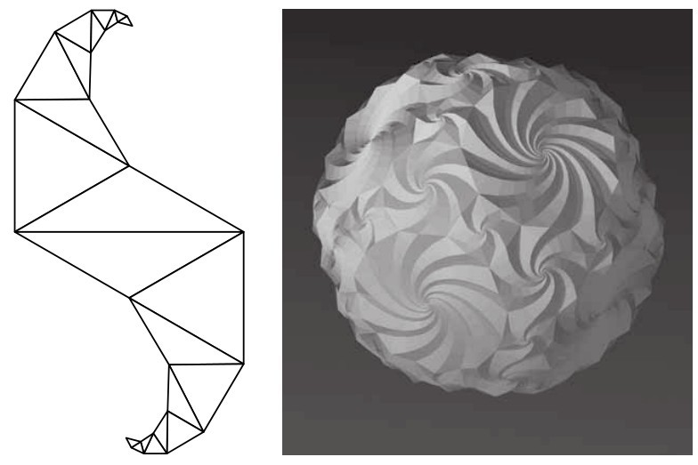
图6-22 螺旋体和螺旋体球
一天下午，会议代表们来到了位于亚特兰大郊区的汤姆·罗杰斯（Tom Rodgers）的家里。罗杰斯是一位中年商人，他在1993年组织了第一次G4G。罗杰斯从小就崇拜加德纳，他最初的想法是举办一场活动，让以害羞著称的加德纳有机会和与他通信的诸多读者见面。他决定从加德纳感兴趣的三个领域中邀请客人，分别是数学、魔术和谜题。那次聚会非常成功，于是在1996年，他组织了第二次聚会。加德纳参加了前两次聚会，但之后他因为身体虚弱，无法出席。罗杰斯住在一间日式风格的小屋里，房屋周围被一片由竹子、松树和果树组成的森林环绕着，我去拜访时，正是果树开花的季节。在花园里，几位客人组成小组，用木头和金属建造几何雕塑。其他人则试图解决一个谜题寻宝游戏，寻宝的线索被贴在房子的外墙上。
突然，普林斯顿大学数学教授约翰·霍顿·康威 [9] 的叫声引起了大家的注意。康威胡子凌乱，满头银发，穿着一件印有方程的T恤衫。他是过去50年里最杰出的数学家之一。他要求每个人给他10个松果，以便于他数出它们的螺旋。球果分类是他的一个新近爱好，几年来他数了约5000个球果上的螺旋。
在房子里，我见到了科林·赖特（Colin Wright），一个住在威勒尔阳光港的澳大利亚人。他有一头学生气的姜黄色头发，戴着眼镜，看上去就是你想象中的数学家的样子。赖特是位杂耍艺人，他说：“在我学会骑独轮车后，这似乎是一件显而易见的事情。”他还帮助开发了一种杂耍的数学符号，听起来或许没什么大不了的，但它却给国际杂耍界带来了活力。事实证明，有了一门语言，玩杂耍的人就能够发现几千年来一直没能发现的把戏。“一旦你有了一门语言来描述问题，它就会有助于你的思考过程。”赖特边说边拿出了一些小球，演示了一种新发明的三球杂耍，“数学不是求和、计算和公式。它是把事情拆开，去理解事情如何运作的一种方式。”
我问他，对于这些数学界最优秀的人来说，把时间花在杂耍、数松果甚至解谜等无关紧要的消遣上，是不是一种自我放纵、毫无意义的行为，或者说是浪费时间。“你要让数学家做他们想做的事。”他回答道。他引用了剑桥大学教授G. H. 哈代的例子，哈代在1940年曾（自豪地）宣称数论没有实际应用。事实上，数论现在是许多互联网安全计划的基础。根据赖特的说法，在发现一些看起来毫无用处的定理的应用这个方面，数学家“的成功简直到了不合理的地步”，而且往往是在定理首次被发现的多年后，才有人找到了它们的应用。
G4G最吸引人的特色之一是，所有客人都被要求带一件礼物，也就是“你想送给马丁的东西”。事实上，你被要求带上300份，因为每位客人最后都会得到一个礼品袋，里面装满了别人的礼物。我参会的那一年，这个礼品袋里有智力玩具、魔术用品、书、CD（激光唱片）、小物件和一片能让可乐说话的塑料。有一袋是给马丁·加德纳的，我拿给了他。
加德纳住在俄克拉何马州的诺曼。我到那里的时候，暴风雨正席卷全州。在州际公路上几次走错路后，我终于找到了他的住处。这里是一家疗养院，位于一家得克萨斯快餐连锁店旁。他的房门离入口仅几步之遥，只要穿过一片公共区域便可走到，有几位老人坐在公共区域里聊天。加德纳的门边有一个收件箱，他不用电子邮件，他寄的信比疗养院其他人加起来的还要多。
加德纳开门邀请我进去。屋里墙上有一张用多米诺骨牌做成的他的肖像、一张爱因斯坦的大幅照片和一张埃舍尔的原作。加德纳的穿着很随意，上身是一件绿色衬衫，下身是一条宽松的长裤。他的外貌很温和，头上几缕白发，戴着巨大的玳瑁眼镜，一双眼睛炯炯有神。他身上散发出一种超凡脱俗的感觉。他身材苗条，站得笔直，可能是因为他每天都站在办公桌前工作。
拜访加德纳感觉完全就像《绿野仙踪》里的桥段，我在中西部的飓风中寻找一位年长的法师。事实证明，《绿野仙踪》主角多萝西的经历是个特别形象的比喻。在我见到加德纳之前，我并不知道加德纳是研究《绿野仙踪》作者L. 弗兰克·鲍姆（L. Frank Baum）的顶级专家。加德纳告诉我，10年前，他甚至写了一个续篇，讲述多萝西和朋友们去曼哈顿的故事。这篇文章受到了严肃报纸的报道，但它并不是很受欢迎。“这个续篇主要是为《绿野仙踪》的粉丝们写的。”他说。
我给了他一份G4G的礼品袋，问他对自己成为一个会议的主题感受如何。“我很荣幸，也很惊讶。”他回答，“我对会议的发展非常惊讶。”很快，他就清楚地意识到，对于在一群数学家中谈论自己的辉煌，他并不是很自在。“我不是数学家。”他说，“我本质上只是个记者。一旦难度超过微积分程度，我就完全搞不懂了。但这就是我的专栏成功的秘诀。我花了很长时间才弄明白自己所写的内容，所以我知道如何写作才能让大多数读者都能读得懂。”当我得知加德纳不是一位严格意义上的数学家时，我最初感到有点儿失望，就好像魔术师被揭秘了一样。
加德纳最喜欢的话题就是魔术，他说这是他最主要的爱好。他订阅魔术杂志，在关节炎没有太严重的时候，也会练习魔术。他提出让我看看他发明的魔术，他说这是他发明的唯一一种快手纸牌魔术，叫作“眨眼就变”，也就是一张牌的颜色会在“眨眼之间”就变了。他拿出了一盒牌，把一张黑色牌夹在牌堆和手掌之间。瞬时间，黑牌变成了红牌。加德纳因为“数学”魔术对数学产生了兴趣，他年轻时的社交圈里大多是魔术师，而不是数学家。他说他喜欢魔术，因为魔术让人对世界产生了一种惊奇的感觉。“你看到一位女士浮在那里，觉得很惊奇，这告诉你，她在地心引力作用下掉到地上也是一种奇迹……其实，引力和女士的悬浮同样神秘。”我问他，数学是否也给了他同样的奇幻感受。他回答：“当然。”
加德纳的数学著作可能是最出名的，但那只代表了他的一部分成果。他的第一本书叫作《时尚和谬论》（Fads and Fallacies），这是第一本揭露伪科学的科普书。他写过关于哲学的书，出版过一部关于宗教的严肃小说。他最畅销的一本书是《带注释的爱丽丝》（The Annotated Alice），这是一本经典书，为《爱丽丝梦游仙境》和《爱丽丝镜中奇遇记》添加了注脚。即使在93岁高龄，他也没有放缓写作的脚步。他将出版一本关于G. K. 切斯特顿（G. K. Chesterton）的散文的书，他还有多个写作计划，包括编写一本关于猜字游戏的大部头。
由于加德纳的努力，休闲数学仍然保持活跃。这是一个令人兴奋的丰富的领域，一直在为所有年龄、各个国家的人带来乐趣，它同样激励着人们认真研究严肃的问题。刚得知加德纳不是一位数学家时，我有点儿沮丧，但当我离开疗养院时，我突然意识到，成为休闲数学代表的这个人，只是一个狂热的业余爱好者，这恰恰非常符合休闲数学的精神。
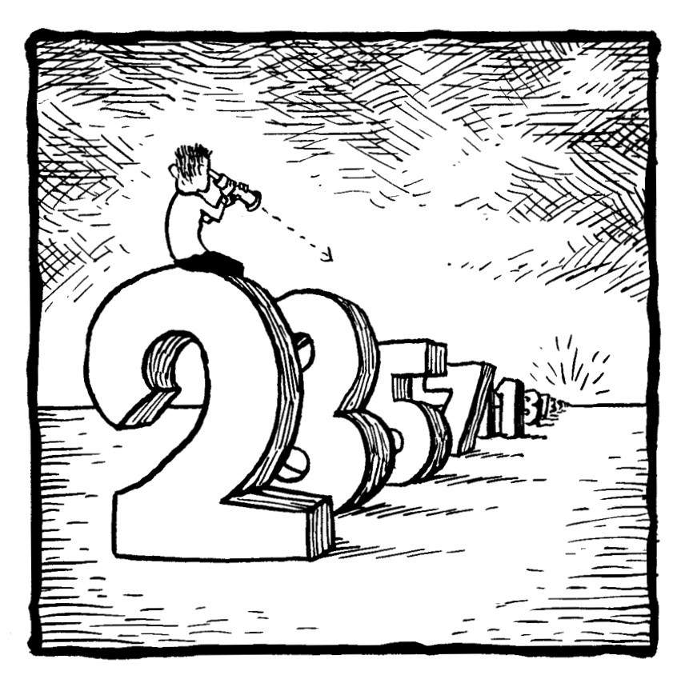
[1] 起初，斯佩尔特小麦的数字被错写成了2301。
[2] 一种埃及的体积单位。
[3] 从北非吹向南欧的一种风沙性热风。——编者注
[4] 马丁·加德纳已于2010年去世，享年95岁。——译者注
[5] 所罗门·戈隆布已于2016年去世，享年83岁。——译者注
[6] 文森特·普莱斯（1911—1993），美国著名电影明星。——译者注
[7] 莫斯科维奇出生于1926年。——译者注
[8] 截至本书中文版出版时（2022年），速拧三阶魔方的世界纪录为3.47秒，由中国选手杜宇生创造。正文提到的各项纪录，均是本书英文版出版时的纪录。——编者注
[9] 约翰·霍顿·康威已于2020年4月去世，享年82岁。——译者注